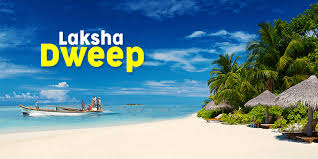
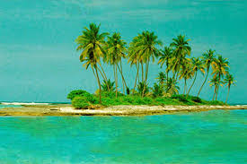
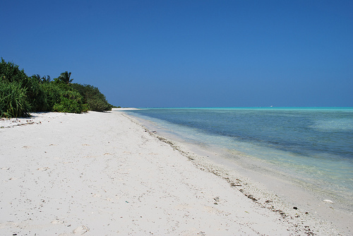
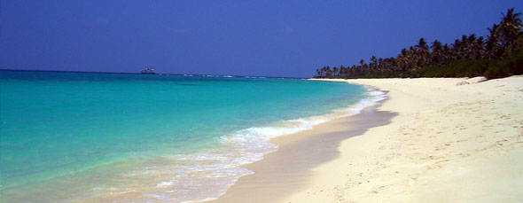

Lakshadweep
Lakshadweep , formerly known as the Laccadive, Minicoy, and Aminidivi Islands is a group of islands in the Laccadive Sea, 200 to 440 km (120 to 270 mi) off the southwestern coast of India. The archipelago is a Union Territory and is governed by the Union Government of India. They were also known as Laccadive Islands, although geographically this is only the name of the central subgroup of the group. Lakshadweep means "one hundred thousand islands" in Malayalam. The islands form the smallest Union Territory of India and their total surface area is just 32 km2 (12 sq mi). The lagoon area covers about 4,200 km2 (1,600 sq m), the territorial waters area 20,000 km2(7,700 sq mi) and the exclusive economic zone area 400,000 km2 (150,000 sq m). The region forms a single Indian district with 10 subdivisions. Kavaratti serves as the capital of the Union Territory and the region comes under the jurisdiction of Kerala High Court. The islands are the northernmost of the Lakshadweep-Maldives-Chagos group of islands, which are the tops of a vast undersea mountain range, the Chagos-Laccadive Ridge.

History
On 1 November 1956, during the reorganization of Indian states,it organized into a separate union territory for administrative purposes. The new territory was called Laccadive, Minicoy, and Amindivi Islands before adopting the Lakshadweep name on 1 November 1973.
To safeguard India's vital shipping lanes to the Middle East, and the growing relevance of the islands in security considerations, an Indian Navy base, INS Dweeprakshak, was commissioned on Kavaratti island.

Geography
Lakshadweep is an archipelago of twelve atolls, three reefs and five submerged banks, with a total of about thirty-nine islands and islets. The reefs are in fact also atolls, although mostly submerged, with only small unvegetated sand cays above the high-water mark. The submerged banks are sunken atolls. Almost all the atolls have a northeast-southwest orientation with the islands lying on the eastern rim, and a mostly submerged reef on the western rim, enclosing a lagoon. It has 10 inhabited islands, 17 uninhabited islands, attached islets, 4 newly formed islets and 5 submerged reefs.[14]
The main islands are Kavaratti, Agatti, Minicoy, and Amini. The total population of the territory is 60,595 according to the 2001 census. Agatti has an airport with direct flights from Kochi.

Tourism
Due to its isolation and scenic appeal, Lakshadweep was already known as a tourist attraction for Indians since 1974. This brings in significant revenue, which is likely to increase. Since such a small region cannot support industries, the government is actively promoting tourism as a means of income in Bangaram and Kadmat islands. Bangaram is projected to become a major destination for international tourism. Water sports activities such as scuba diving, wind surfing, surfing, kayaking, canoeing, water skiing, sportfishing, yachting and night sea voyages are popular activities among tourists. Tourists flock to these islands throughout the year, except during the southwest monsoon months when seas are extremely rough. The government has also proposed to set up two customs clearance check-in offices so that tourists can enter directly instead of getting permission from the nearest customs office in Kochi, which is 260 nautical miles from these islands. These will be the smallest customs offices in India. Tourism is expected to get a big boost after these offices open as the islands lie on one of the busiest cruise ways.

Administration
The entire Union Territory of Lakshadweep is considered as one district. Earlier the district was divided into four Tehsils. At present there are 10 Sub Divisions. While the Sub Divisional Officers coordinate development activities in 8 islands, in Minicoy and Agatti the Sub Division is under a Deputy Collector. Administration Secretariat was shifted from Kozhikode to Kavaratti in March 1964. With increase in various plan schemes and fund allocation, the necessity of decentralization of department was felt and accordingly in 1972 new offices were created. Though the departmental offices are working separately, Administration Secretariat and District Administration are functioning from the Secretariat Building as compact unit under a single file system.
Matters coming under District Administration, such as revenue, land settlement, law and order are under the purview of the Collector cum Development Commissioner who is also the District Magistrate. Consequent upon the appointment of an officer of Indian Administrative Service as the Managing Director of Lakshadweep Development Corporation Limited (LDCL) and creation of the post of Secretary, Pay and Accounts, the development departments have been allotted among these senior officers including Collector cum Development Commissioner and they are also designated as Secretaries of allotted departments